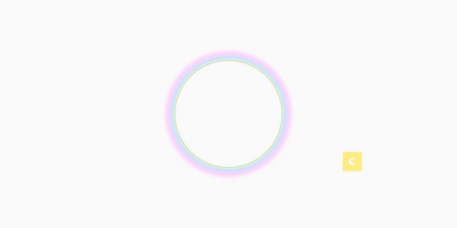

Out of Office Co-working Event with the CGDC
Come be OOO with us for our April coworking session at Two-Thirty.
Break out of your usual work routine and join fellow designers at Two-Thirty in River North for an afternoon of coworking. Bring your projects, settle in, and enjoy the company of other creatives tackling their own work. No agenda, just space to focus and connect.
What to expect
Whether you’re heads-down on a project or looking to bounce ideas off peers, work alongside the energy of others, and have casual conversations that spark new thinking, and access to the collective expertise in the room.
The session runs from 10am – 2pm. Bring your lunch or pack a snack. This is a free event, but space is limited so registration is required to attend.
The Two-Thirty Coworking space can be found at 230 W. Superior St (entrance on Frankllin St) and down the stairs to the garden level.
Special thanks thank you to Nicolette Stouser-Bassett for organizing and to Two-Thirty for offering their space.